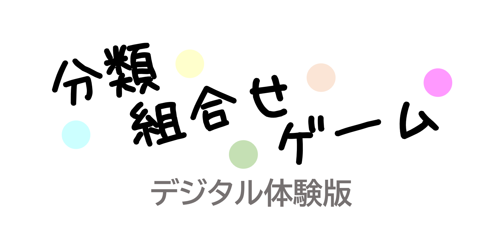

ロード中 0 / 90
制作： 特殊活動友の会（2026）
※ ゲーム中の写真はすべて制作者による撮影
※4文字まで（ひらがな・カタカナ・英数字のみ）
対戦相手と同じ5桁の数字を入力してください
（数字は自由に決められます）
00000
※4人未満の場合、残りはCPUになります。
画像をクリックすると拡大されます。
脊椎動物の動物札を使って、分類単位「目」を基準とした3枚セットを3組つくります。札の組合せで点数が決まり、1点以上あれば「あがり」です。ゲームを2巡おこない、合計点で順位が決まります。
条鰭綱・両生綱・爬虫綱・鳥綱・哺乳綱の5つの分類群ごとに18枚ずつ、全部で90枚です。分類群ごとに色分けされていて、札には「目」と「科」が書かれています。絶滅危惧種（環境省レッドリストのCR・EN・VU）と特定外来生物には、その表示があります。
1組の3枚セットは、すべて同じ「綱」の動物（同じ色の札）でつくります。3組はそれぞれ違う「綱」でも構いません。
3枚セットには「同目セット」と「別目セット」の2種類あります。
同目セット （3枚すべてが同じ目）
別目セット （3枚すべてが異なる目）
親から順番に進めます。自分の番では「山札から1枚引く → 手札から1枚捨てる」をおこないます。捨てた札は自分の前に、捨てた順に表向きで並べます。これを繰り返して3枚セット3組の完成を目指します。
誰かがあがるか、山札が引けなくなったら1局が終了です。あがった人には札の組合せに応じた点数が入ります。捨て札であがられた人は、その点数ぶん減ります。山札がなくなって終わった場合は、誰の点数も動きません。
親を変えて次の局を始め、全員が親をしたらゲーム1巡が終了です。4人なら4局で1巡になります。
自分の番になったとき、一つ前のプレイヤーが捨てた札で3枚セットが完成する場合、「鳴き」を宣言してその札を取れます。完成したセットは全員に見えるように自分の前に置き、それ以降は変更できません。鳴いた場合は山札から引かず、手札から1枚捨てて番を終えます。
鳴いてできたセット （取った札を横に倒して置きます）
3枚セット3組が特定の形になっていると「役」が成立し、点数が入ります。たとえば3組がすべて同目セットなら「トリプル同目」、3組がすべて同じ分類群なら「一分類群」です。あがり方そのものが役になることもあり、山札から引いた札であがれば「自分あがり」がつきます。
役は重複します。2つ以上の役が同時に成立していれば、その合計が点数になります。
どんな役があるかは「役一覧」のタブで確認してください。
3枚セット3組が完成したら「あがり」を宣言できます。ただし点数が0点以下のときは宣言できません。あがりには2種類あります。
同じ捨て札に対して「あがり」と「鳴き」が同時に起きた場合は「あがり」が優先します。1枚の捨て札で複数のプレイヤーがあがりを宣言した場合は、全員があがりになります。
あがりの点数は、成立した役の点数の合計に、絶滅危惧種1枚につき＋1点、特定外来生物1枚につき－1点したものです。ただし1回のあがりで動く点数は15点までです。親かどうかによる点数の違いはありません。
自分あがりのときは、あがった人にその点数が入るだけです。捨て札あがりのときは、札を捨てた人からあがった人へ点数が移動します。1枚の捨て札で複数のプレイヤーがあがった場合は、その合計ぶんが捨てた人から減ります。持ち点はマイナスになることもあります。
あがれる例 2点
役がなくて「捨て札あがり」ができない例 0点
役がなくてもあがれる例 1点
2巡が終了したら、それまでの合計点で順位を決めます。同点で1位が複数いる場合はもう1巡おこない、3巡の合計点で順位を決めます。それでも同点なら、1位が決まるまで続けます。
札の画像は、その役が成立する組合せの一例です。役は同時に成立することもあります。
捨て札あがりのときは、あがったプレイヤーに入った点数と同じだけ、札を捨てたプレイヤーの点数が減ります。
| 役 | 成立条件 | 点数 |
|---|---|---|
| 自分あがり | 山札から自分で引いた札であがる。 | 2点 |
| 鳴きなし | 一度も鳴かずにあがる。 | 1点 |
| リーチ | 鳴かずに、残り1枚で3組が完成する状態のとき、宣言して札を捨てる。その後は手札の組合せを変えられず、引いた札で完成しないときはそのまま捨てる。 | 2点 |
| 一発あがり | リーチ宣言のあと、次の自分の番までに3組が完成してあがる。間に誰かが鳴いた場合は成立しない。 | 1点 |
| 同科セット | 同目セットの3枚がすべて同じ科。 | 1セットにつき1点 |
| トリプル同目 | 3組がすべて同目セット。 | 2点 |
| トリプル別目 | 3組がすべて別目セット。 | 2点 |
| オール同目 | 9枚がすべて同じ目。トリプル同目・一分類群と必ず重複する。 | 2点 |
| オール別目 | 9枚がすべて異なる目。トリプル別目と必ず重複する。 | 2点 |
| 一分類群 | 3組がすべて同じ分類群。 | 2点 |
| 絶滅危惧種 | 環境省レッドリストのCR・EN・VU。 | 1枚につき ＋1点 |
| 特定外来生物 | 条件付特定外来生物を含む。 | 1枚につき －1点 |
成立すると通常の点数計算をせず、15点になります。
| 三分類群トリプル同科 | 3組がそれぞれ異なる分類群で、どの3枚セットも同科セットになっている。 | 15点 |
| オール絶滅危惧種 | 9枚がすべて絶滅危惧種。3枚セット3組を完成させなくてよい。 | 15点 |
| オール特定外来生物 | 9枚がすべて特定外来生物。3枚セット3組を完成させなくてよい。 | 15点 |
| 上限到達 | 通常の点数計算で15点以上になった場合も特別役として扱う。 | 15点 |
順番決定